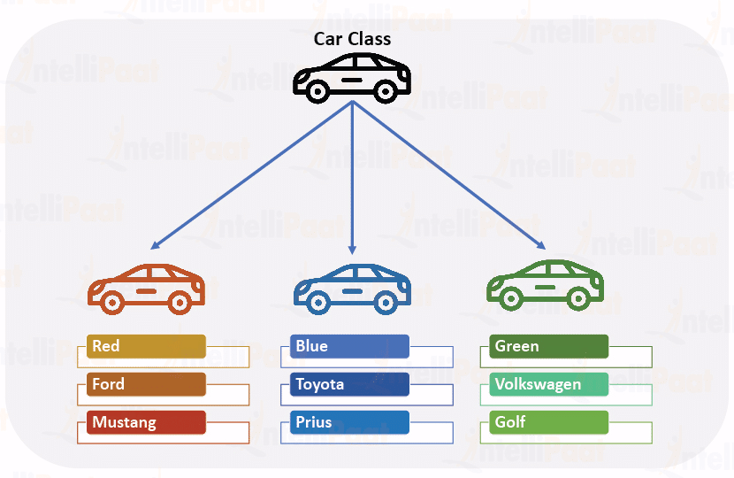

Classes
Comprendre les bases de l'OOP (Programmation Orientée Objet) en Python.
- Cheatsheet — Classes & OOP
- ️ Récapitulatif — Erreurs clés à éviter
- 1) OOP : data + behavior
- 2) Exemple avec une classe existante : `str`
- 3) Classes et instances
- 4) Créer sa première classe : `Car`
- 5) Le constructeur : `__init__`
- 6) Attributs d'instance (state)
- 7) Méthodes d'instance (behavior)
- 8) Le rôle de `self`
- 9) Résumé
📋 Cheatsheet — Classes & OOP
## ── DÉFINIR UNE CLASSE ───────────────────────────────
class MaClasse: # CamelCase obligatoire
def __init__(self, param1, param2):
self.attribut1 = param1 # état (state) — toujours dans __init__
self.attribut2 = param2
def ma_methode(self): # comportement (behavior)
return self.attribut1 # accède à l'état via self
## ── INSTANCIER ───────────────────────────────────────
obj = MaClasse("valeur1", "valeur2") # Python appelle __init__ automatiquement
## ── ACCÉDER ──────────────────────────────────────────
obj.attribut1 # attribut → sans ()
obj.ma_methode() # méthode → avec ()
## ── MODIFIER UN ATTRIBUT ─────────────────────────────
obj.attribut1 = "nouvelle_valeur"
## ── EXEMPLE COMPLET ──────────────────────────────────
class Car:
def __init__(self, brand):
self.brand = brand
self.engine_started = False # toujours initialiser dans __init__
def start_engine(self):
self.engine_started = True # modifie l'état via self
def is_running(self):
return self.engine_started # retourne l'état courant
ferrari = Car("Ferrari")
ferrari.start_engine()
ferrari.is_running() # True
## ── CONVENTIONS ──────────────────────────────────────
## Fichier → snake_case.py
## Classe → CamelCase
## Méthode → snake_case()
## Attribut → snake_case⚠️ Récapitulatif — Erreurs clés à éviter
Oublier self comme premier paramètre d'une méthode
class Car:
def start_engine(): # ❌ TypeError à l'appel
pass
def start_engine(self): # ✅
passConfondre attribut et méthode (parenthèses)
my_car.engine_started() # ❌ TypeError: 'bool' is not callable
my_car.engine_started # ✅ attribut → sans ()
my_car.start_engine() # ✅ méthode → avec ()Oublier d'initialiser un attribut dans __init__
class Car:
def start_engine(self):
self.engine_started = True # ❌ l'attribut n'existe que si start_engine est appelé
class Car:
def __init__(self):
self.engine_started = False # ✅ toujours défini dès l'instanciationNommer une classe en snake_case
class sports_car: # ❌ convention non respectée
class SportsCar: # ✅ CamelCaseAppeler __init__ manuellement
my_car.__init__() # ❌ inutile et trompeur
my_car = Car() # ✅ Python appelle __init__ automatiquement1) OOP : data + behavior
L'OOP consiste à regrouper :
- Data (ou state) : les informations stockées.
- Behavior : les méthodes (fonctions) qui agissent sur ces données.
2) Exemple avec une classe existante : str
Python fournit des classes intégrées, comme str.
sentence = "hello world"
sentence = str("hello world")Ici :
- State : la suite de caractères.
- Behavior : des méthodes comme
upper().
sentence.upper()3) Classes et instances
- Une classe est un plan (ou un moule).
- Une instance est un objet concret créé à partir de ce plan.
Exemple mental : blueprint de voiture → voitures fabriquées.

Car classes
4) Créer sa première classe : Car
4.1 Définition
class Car:
passConvention
- Nom de fichier : sports_car.py (snake_case)
- Nom de classe : SportsCar (CamelCase)
4.2 Instanciation
ferrari = Car() # crée une instance
type(ferrari) #=> __main__.Car5) Le constructeur : __init__
Quand tu fais Car(), Python :
- crée l'objet
- puis appelle
__init__
class Car:
def __init__(self):
print("You have just instantiated the class!")
ferrari = Car()
#=> You have just instantiated the class!6) Attributs d'instance (state)
Les attributs stockent la data de l'objet.
class Car:
def __init__(self):
self.engine_started = False
my_car = Car()
my_car.engine_started #=> False7) Méthodes d'instance (behavior)
Les méthodes sont les comportements de l'objet.
class Car:
def __init__(self):
self.engine_started = False
def is_engine_started(self):
return self.engine_started
def start_engine(self):
self.engine_started = True
my_car = Car()
my_car.is_engine_started() #=> False
my_car.start_engine()
my_car.is_engine_started() #=> TrueParenthèses : méthode vs attribut
- my_car.is_engine_started() → méthode → avec ()
- my_car.engine_started → attribut → sans ()
8) Le rôle de self
self est une référence vers l'instance courante.
class Castle:
def __init__(self, name, ruler):
self.name = name
self.ruler = ruler
def castle_details(self):
return f"{self.name} is ruled by {self.ruler_name()}"
def ruler_name(self):
return self.ruler.capitalize()
dragonstone = Castle("Dragonstone", "targaryen")
dragonstone.castle_details() # => "Dragonstone is ruled by Targaryen"9) Résumé
- En Python, tout est objet.
- Une classe définit :
- des attributs (state)
- des méthodes (behavior)
selfdésigne l'instance sur laquelle la méthode est appelée.
- 🧭 Introduction
- 1) OOP : regrouper données et comportements
- 2) Python utilise déjà des classes
- 3) Classe vs Instance : le plan et l'objet
- 4) Créer sa première classe
- 5) Le constructeur : `__init__`
- 6) Les attributs d'instance : stocker l'état
- 7) Les méthodes d'instance : définir les comportements
- 8) Le rôle de `self`
- 9) Récapitulatif : classe complète commentée
- 🎯 Questions de vérification
- 📌 TL;DR
🧭 Introduction
Pourquoi apprendre les classes ?
Jusqu'ici, tu as écrit du code de manière "linéaire" : des variables, des fonctions, des listes. C'est bien pour des petits programmes. Mais dès que ton programme grandit, tu as besoin d'un outil plus puissant pour organiser ton code. Cet outil, c'est la Programmation Orientée Objet (OOP — Object-Oriented Programming).
L'idée centrale : regrouper dans un même "endroit" les données et les actions qui vont avec.
Les 5 points à retenir absolument
- Une classe est un moule — elle décrit la structure générale.
- Une instance est un objet fabriqué avec ce moule — c'est la chose concrète.
- Les attributs sont les informations stockées dans l'objet (son état).
- Les méthodes sont les actions que l'objet peut faire (son comportement).
selfest le mot magique qui permet à l'objet de se référer à lui-même.
L'analogie fil rouge : le moule à gâteau
Imagine un moule à gâteau en forme d'étoile.
- Le moule = la classe. Il définit la forme, mais tout seul il ne sert à rien.
- Chaque gâteau fabriqué avec ce moule = une instance. C'est quelque chose de réel, de concret.
- La saveur du gâteau (chocolat, vanille...) = un attribut. Chaque gâteau a sa propre saveur.
- "Couper le gâteau" ou "le décorer" = des méthodes. Ce sont des actions qu'on peut faire sur un gâteau.
On peut fabriquer autant de gâteaux qu'on veut avec le même moule, chacun avec ses propres caractéristiques.
Ce que tu vas apprendre dans ce cours
- Ce qu'est l'OOP (données + comportement)
- Comment Python utilise déjà des classes (ex:
str) - La différence entre classe et instance
- Comment créer ta propre classe
- Le constructeur
__init__ - Les attributs (stocker des données)
- Les méthodes (définir des comportements)
- Le rôle de
self
1) OOP : regrouper données et comportements
Le problème sans OOP
Sans classes, si tu veux modéliser une voiture, tu te retrouves avec des variables éparpillées :
# Sans classe : tout est éparpillé, difficile à gérer
voiture_marque = "Ferrari" # une variable pour la marque
voiture_demarree = False # une autre pour l'état du moteur
# Et si tu as 10 voitures ? C'est le chaos.La solution OOP
L'OOP regroupe les données (ce qu'on sait sur l'objet) et les comportements (ce qu'on peut faire avec l'objet) au même endroit.
- Data / State (état) : les informations que l'objet "connaît" sur lui-même. Ex: une voiture connaît sa marque, si son moteur est démarré ou non.
- Behavior (comportement) : les actions que l'objet peut effectuer. Ex: une voiture peut démarrer son moteur.
En OOP, on dit souvent que les objets ont un état (ce qu'ils sont) et un comportement (ce qu'ils font). C'est exactement comme dans la vraie vie : une lampe a un état (allumée ou éteinte) et un comportement (s'allumer, s'éteindre).
2) Python utilise déjà des classes
Tu les utilises sans le savoir. La classe str en est l'exemple parfait.
sentence = "hello world" # crée une instance de la classe str
sentence = str("hello world") # c'est exactement pareil, écrit autrementCette chaîne de caractères a :
- un état : la suite de lettres
"hello world" - des comportements : des méthodes qu'on peut appeler dessus
sentence.upper() # appelle la méthode upper() → retourne "HELLO WORLD"En Python, tout est objet. Les chaînes, les listes, les entiers... tout. Quand tu écris "bonjour".upper(), tu appelles une méthode sur une instance de la classe str. Tu utilisais des classes depuis le début sans t'en rendre compte !
3) Classe vs Instance : le plan et l'objet
La classe = le plan de construction
Une classe décrit comment un objet doit être fait. Elle ne crée rien de concret, elle définit juste la structure.
L'instance = l'objet concret
Une instance est un objet réel, créé à partir de la classe.
Exemple mental : le plan d'architecte d'une maison (classe) vs la maison construite (instance). À partir d'un seul plan, on peut construire plusieurs maisons différentes.
# La classe "Car" est le plan
# ferrari, renault, toyota sont des instances (des voitures concrètes)
ferrari = Car()
renault = Car()
toyota = Car()Chaque instance est indépendante : démarrer le moteur de ferrari n'affecte pas renault.
Le moule à gâteau (classe) peut servir à faire autant de gâteaux (instances) qu'on veut. Chaque gâteau est indépendant.
4) Créer sa première classe
4.1 La définition minimale
class Car: # on déclare une classe avec le mot-clé "class"
pass # "pass" = "je ne mets rien pour l'instant, mais la classe existe"La classe Car existe maintenant. Elle est vide, mais elle existe.
Convention de nommage — à respecter toujours :
- Nom de fichier Python : sports_car.py → snake_case (minuscules + underscores)
- Nom de classe : SportsCar → CamelCase (chaque mot commence par une majuscule)
- Méthodes et attributs : start_engine, engine_started → snake_case
4.2 Instanciation : créer un objet à partir de la classe
ferrari = Car() # on "instancie" la classe Car → on crée un objet ferrari
type(ferrari) # => <class '__main__.Car'> — Python confirme que ferrari est un CarCar() avec les parenthèses, c'est comme "appeler" le moule pour fabriquer un gâteau.
On nomme les classes en CamelCase, pas en snake_case. class sports_car: est incorrect. La bonne écriture est class SportsCar:.
5) Le constructeur : __init__
Qu'est-ce que __init__ ?
__init__ est une méthode spéciale appelée automatiquement par Python à chaque fois qu'une instance est créée. C'est le "constructeur" de l'objet.
Les doubles underscores __ de chaque côté signalent que c'est une méthode réservée par Python (on appelle ça "dunder" pour double underscore).
class Car:
def __init__(self): # cette méthode est appelée automatiquement
print("Une voiture vient d'être créée!") # s'exécute à la création
ferrari = Car()
# => Une voiture vient d'être créée! # Python a appelé __init__ tout seulQuand tu écris Car(), Python fait deux choses dans l'ordre :
- Il crée l'objet en mémoire.
- Il appelle automatiquement
__init__pour l'initialiser.
Ne jamais appeler __init__ manuellement comme ça : ferrari.__init__(). C'est inutile et source de confusion. Python s'en charge tout seul quand tu écris Car().
Passer des paramètres au constructeur
__init__ peut accepter des paramètres, comme n'importe quelle fonction :
class Car:
def __init__(self, brand): # brand est un paramètre passé à la création
print(f"Voiture créée : {brand}")
ferrari = Car("Ferrari") # on passe "Ferrari" au constructeur
# => Voiture créée : Ferrari6) Les attributs d'instance : stocker l'état
C'est quoi un attribut ?
Un attribut, c'est une variable attachée à une instance. Elle stocke l'état de l'objet.
On les définit dans __init__ avec la syntaxe self.nom_attribut = valeur.
class Car:
def __init__(self):
self.engine_started = False # l'attribut engine_started est initialisé à False
my_car = Car() # on crée une instance
my_car.engine_started # => False — on accède à l'attribut SANS parenthèsesOn peut modifier un attribut directement
my_car.engine_started = True # on modifie l'attribut directement
my_car.engine_started # => TruePourquoi initialiser dans __init__ et pas ailleurs ?
# MAUVAISE pratique : l'attribut n'existe que si la méthode est appelée
class Car:
def start_engine(self):
self.engine_started = True # ❌ engine_started n'existe pas encore avant cet appel
# BONNE pratique : l'attribut existe dès la création de l'objet
class Car:
def __init__(self):
self.engine_started = False # ✅ engine_started existe toujours, dès le départToujours initialiser tous les attributs dans __init__. Sinon, si tu essaies d'y accéder avant d'avoir appelé la méthode qui le crée, Python lève une AttributeError.
Exemple avec plusieurs attributs
class Car:
def __init__(self, brand): # brand est passé en paramètre
self.brand = brand # on stocke la marque dans l'attribut self.brand
self.engine_started = False # le moteur est éteint par défaut
ferrari = Car("Ferrari") # on passe "Ferrari" comme valeur de brand
ferrari.brand # => "Ferrari"
ferrari.engine_started # => FalseChaque instance a ses propres attributs, indépendants des autres :
renault = Car("Renault")
ferrari.brand # => "Ferrari"
renault.brand # => "Renault" — les deux coexistent sans s'affecter7) Les méthodes d'instance : définir les comportements
C'est quoi une méthode ?
Une méthode, c'est une fonction définie à l'intérieur d'une classe. Elle décrit ce que l'objet peut faire.
La différence avec une fonction normale : une méthode prend toujours self comme premier paramètre (pour pouvoir accéder aux attributs de l'instance).
class Car:
def __init__(self):
self.engine_started = False # état initial : moteur éteint
def is_engine_started(self): # méthode qui retourne l'état du moteur
return self.engine_started # accède à l'attribut via self
def start_engine(self): # méthode qui démarre le moteur
self.engine_started = True # modifie l'attribut via self
my_car = Car()
my_car.is_engine_started() # => False — on appelle la méthode AVEC les parenthèses
my_car.start_engine() # => None — le moteur est maintenant démarré
my_car.is_engine_started() # => True — l'état a changéRécap : start_engine() modifie l'état de l'objet. is_engine_started() consulte cet état. Les deux travaillent ensemble pour décrire le comportement d'une voiture.
Méthode vs Attribut : les parenthèses sont obligatoires pour les méthodes.
- my_car.is_engine_started() avec () → c'est une méthode, on l'appelle.
- my_car.engine_started sans () → c'est un attribut, on y accède directement.
Si tu mets des parenthèses sur un attribut : my_car.engine_started() → Python va lever TypeError: 'bool' object is not callable.
8) Le rôle de self
Comprendre self
self est une référence vers l'instance courante — c'est-à-dire l'objet sur lequel la méthode est appelée.
Quand tu écris ferrari.start_engine(), Python traduit ça en Car.start_engine(ferrari). Il passe automatiquement ferrari comme valeur de self.
C'est pour ça que self est toujours le premier paramètre de toute méthode. Python le remplit automatiquement.
Exemple avec self qui appelle une autre méthode
class Castle:
def __init__(self, name, ruler):
self.name = name # stocke le nom du château
self.ruler = ruler # stocke le nom du souverain
def castle_details(self):
return f"{self.name} is ruled by {self.ruler_name()}" # appelle une autre méthode via self
def ruler_name(self):
return self.ruler.capitalize() # retourne le nom du souverain avec majuscule
dragonstone = Castle("Dragonstone", "targaryen")
dragonstone.castle_details() # => "Dragonstone is ruled by Targaryen"Dans cet exemple :
self.nameaccède à l'attributnamede l'instance.self.ruler_name()appelle la méthoderuler_namede la même instance.selfest le lien entre toutes les parties de l'objet.
Une bonne image pour self : imagine que chaque objet a un badge avec son prénom. Quand une méthode s'exécute, self est ce badge — il permet à l'objet de "savoir qui il est" et d'accéder à ses propres données.
Oublier self comme premier paramètre d'une méthode est une erreur classique.
class Car:
def start_engine(): # ❌ Python ne sait pas à quelle instance s'adresser
pass
def start_engine(self): # ✅ self est obligatoire
passSans self, Python lèvera un TypeError dès que tu appelleras la méthode.
9) Récapitulatif : classe complète commentée
Voici une classe Car complète, qui regroupe tout ce qu'on a vu :
class Car: # définition de la classe (le moule)
def __init__(self, brand): # constructeur : appelé automatiquement à la création
self.brand = brand # attribut : marque de la voiture
self.engine_started = False # attribut : état du moteur (éteint par défaut)
def start_engine(self): # méthode : action de démarrer le moteur
self.engine_started = True # modifie l'état de l'instance via self
def is_running(self): # méthode : consulte l'état du moteur
return self.engine_started # retourne True ou False
# Utilisation
ferrari = Car("Ferrari") # instanciation : on crée un objet ferrari
ferrari.brand # => "Ferrari" — accès à un attribut (sans ())
ferrari.is_running() # => False — appel d'une méthode (avec ())
ferrari.start_engine() # démarre le moteur
ferrari.is_running() # => True — l'état a changéRésumé des conventions :
| Élément | Convention | Exemple |
|---|---|---|
| Fichier | snake_case | sports_car.py |
| Classe | CamelCase | SportsCar |
| Méthode | snake_case | start_engine() |
| Attribut | snake_case | engine_started |
🎯 Questions de vérification
Question 1 — Classe ou instance ?
Dans le code suivant, qu'est-ce qui est une classe et qu'est-ce qui est une instance ?
class Dog:
pass
rex = Dog()La classe c'est
Dog. L'instance c'estrex.Dogest le moule,rexest le chien concret fabriqué avec ce moule.
Question 2 — Trouver l'erreur
Ce code contient une erreur. Laquelle, et pourquoi ?
class Car:
def __init__(self):
self.engine_started = False
my_car = Car()
my_car.engine_started()
engine_startedest un attribut (un booléenFalse), pas une méthode. Il ne faut pas mettre de parenthèses. La bonne écriture estmy_car.engine_startedsans(). Avec les parenthèses, Python tente d'appelerFalsecomme une fonction, ce qui lèveTypeError: 'bool' object is not callable.
Question 3 — Que fait self ?
Explique avec tes propres mots pourquoi self est nécessaire dans une méthode.
selfpermet à la méthode de savoir sur quelle instance elle est en train de travailler. Sansself, la méthode ne pourrait pas accéder aux attributs de l'objet. C'est le lien entre la méthode et l'instance qui l'appelle.
Question 4 — Créer une classe
Crée une classe Lamp avec :
- un attribut
is_oninitialisé àFalse - une méthode
turn_on()qui passeis_onàTrue - une méthode
turn_off()qui passeis_onàFalse
Solution attendue :
class Lamp:
def __init__(self):
self.is_on = False
def turn_on(self):
self.is_on = True
def turn_off(self):
self.is_on = False📌 TL;DR
- Une classe est un moule qui définit la structure d'un objet ; une instance est l'objet concret créé à partir de ce moule.
- Les attributs (définis dans
__init__avecself.nom = valeur) stockent l'état de l'objet. - Les méthodes (fonctions dans la classe) définissent les comportements de l'objet.
selfest la référence à l'instance courante — il est toujours le premier paramètre de toute méthode.__init__est le constructeur : Python l'appelle automatiquement à chaque création d'instance.- On accède à un attribut sans parenthèses :
objet.attribut. On appelle une méthode avec parenthèses :objet.methode(). - Toujours initialiser les attributs dans
__init__, jamais ailleurs. - Les classes se nomment en CamelCase (
SportsCar), les méthodes et attributs en snake_case (start_engine). - En Python, tout est objet : les
str,list,int... sont tous des instances de classes.
A. Concepts du cours
Pourquoi la POO ?
L'orienté objet n'est ni indispensable, ni magique. C'est un outil d'organisation quand vous avez à manipuler des entités qui combinent état (données) et comportement (opérations sur ces données).
En data science, vous écrivez beaucoup de code procédural (transformer des DataFrames, entraîner des modèles avec sklearn) et relativement peu de classes. Mais quand vous en écrivez, c'est généralement pour deux raisons :
- Encapsuler un état qui doit être manipulé de manière cohérente (un modèle entraîné qui mémorise ses poids et expose
predict) - Définir une interface réutilisable (votre propre transformer sklearn-compatible)
La POO devient une charge cognitive si vous l'imposez là où elle n'apporte rien. Une classe avec une seule méthode statique est presque toujours mieux écrite comme une fonction.
Analogie : une classe est un moule à gâteau, une instance est un gâteau. Le moule définit la forme (les attributs), la recette définit ce qu'on peut faire avec (les méthodes). Vous pouvez fabriquer des centaines de gâteaux du même moule, chacun avec son propre glaçage (état spécifique).
Définir une classe
class BankAccount:
"""A simple bank account."""
# Attribut de classe (partagé par TOUTES les instances)
interest_rate = 0.02
def __init__(self, owner, balance=0):
# Attributs d'instance (un par objet)
self.owner = owner # self = l'instance en cours de création
self.balance = balance
def deposit(self, amount):
"""Ajoute amount au solde, échoue si amount <= 0."""
if amount <= 0:
raise ValueError("Amount must be positive")
self.balance += amount
def withdraw(self, amount):
"""Retire amount, échoue si solde insuffisant."""
if amount > self.balance:
raise ValueError("Insufficient funds")
self.balance -= amount
def apply_interest(self):
"""Applique le taux d'intérêt de la classe au solde de l'instance."""
self.balance *= (1 + BankAccount.interest_rate)Utilisation :
acc = BankAccount("Alice", 100) # __init__ appelé automatiquement
acc.deposit(50)
print(acc.balance) # 150
acc.withdraw(30)
print(acc.balance) # 120Trois éléments clés :
__init__: le constructeur, appelé automatiquement à la création (BankAccount("Alice", 100)).self: référence à l'instance courante. Premier argument de toute méthode d'instance, toujours explicite (contrairement authisimplicite de Java/JS).- Attributs : créés en assignant
self.attribut = valeur. Pas de déclaration préalable.
Piège classique : oublier self. Si vous écrivez def deposit(amount): au lieu de def deposit(self, amount):, l'appel acc.deposit(50) essaie de passer acc comme amount et échoue avec un message déroutant.
Méthodes spéciales (dunder)
Python utilise des méthodes double underscore pour intégrer vos classes au langage. Maîtriser ces dunders fait la différence entre un débutant et un développeur Python idiomatique.
class Vector:
def __init__(self, x, y):
self.x = x
self.y = y
def __repr__(self):
"""Représentation pour les développeurs (debug, REPL)."""
return f"Vector({self.x}, {self.y})"
def __str__(self):
"""Représentation pour les utilisateurs (print, format)."""
return f"({self.x}, {self.y})"
def __add__(self, other):
"""Permet v1 + v2 via l'opérateur natif."""
return Vector(self.x + other.x, self.y + other.y)
def __mul__(self, scalar):
"""Permet v * 3 via l'opérateur natif."""
return Vector(self.x * scalar, self.y * scalar)
def __eq__(self, other):
"""Permet v1 == v2."""
return self.x == other.x and self.y == other.y
def __len__(self):
"""Permet len(v) — renvoie toujours 2 pour un vecteur 2D."""
return 2
def __getitem__(self, idx):
"""Permet v[0], v[1]."""
return [self.x, self.y][idx]v1 = Vector(1, 2)
v2 = Vector(3, 4)
v3 = v1 + v2 # Appelle __add__ → Vector(4, 6)
v4 = v1 * 3 # Appelle __mul__ → Vector(3, 6)
print(v3) # Appelle __str__ → "(4, 6)"
v1 == Vector(1, 2) # True via __eq__
len(v1) # 2 via __len__
v1[0] # 1 via __getitem__Cette intégration au langage est ce qu'on appelle le data model Python. C'est ce qui permet à NumPy d'écrire a + b au lieu de a.add(b).
Bonne pratique : implémentez toujours __repr__ dans vos classes. Quand vous debuggerez à 23 h une liste d'objets, vous voulez voir [Vector(1, 2), Vector(3, 4)] et pas [<__main__.Vector object at 0x7f8a>, <__main__.Vector object at 0x7f9b>].
Héritage et polymorphisme
class Animal:
def __init__(self, name):
self.name = name
def speak(self):
raise NotImplementedError("Subclasses must override speak()")
class Dog(Animal): # Dog hérite de Animal
def speak(self):
return f"{self.name} says Woof!"
class Cat(Animal):
def speak(self):
return f"{self.name} says Meow!"
# Polymorphisme : on itère sans savoir si c'est Dog ou Cat
animals = [Dog("Rex"), Cat("Whiskers"), Dog("Buddy")]
for a in animals:
print(a.speak())
# Rex says Woof!
# Whiskers says Meow!
# Buddy says Woof!Trois concepts :
- Héritage :
class Dog(Animal):indique queDoghérite deAnimal. Toutes les méthodes et attributs d'Animalsont accessibles dansDog. - Override :
Dog.speakredéfinitAnimal.speak. C'est l'enfant qui gagne. - Polymorphisme : la boucle
for a in animalsappellea.speak()sans savoir siaest unDogou unCat. C'est Python qui résout dynamiquement.
Pour appeler la version parent depuis l'enfant : super().
class Puppy(Dog):
def speak(self):
original = super().speak() # Appelle Dog.speak
return f"{original} (but tiny)"B. Compléments avancés
@dataclass, le mode moderne
Pour 90% des cas où vous voulez juste une classe qui contient des données structurées, écrire __init__, __repr__, __eq__ à la main est du boilerplate inutile. Python 3.7 a introduit @dataclass :
from dataclasses import dataclass, field
@dataclass
class User:
name: str
age: int
email: str = "anonymous@x.com" # Valeur par défaut
tags: list[str] = field(default_factory=list) # Pour les mutables (évite le piège)
u = User("Alice", 30)
print(u) # User(name='Alice', age=30, email='anonymous@x.com', tags=[])
u == User("Alice", 30, "anonymous@x.com", []) # TrueLe décorateur génère automatiquement __init__, __repr__, __eq__.
Variantes :
@dataclass(frozen=True): instance immuable et hashable (utilisable comme clé de dict).@dataclass(order=True): génère<,<=,>,>=qui comparent dans l'ordre des champs.
Analogie : @dataclass est à la POO Python ce que les f-strings sont au formatage de strings. Une amélioration de la qualité de vie qui transforme un boilerplate verbeux en une déclaration concise. Si vous n'utilisez pas dataclass, c'est presque toujours par habitude obsolète.
Pour des cas avec validation ou serialization, montez d'un cran avec pydantic :
from pydantic import BaseModel, EmailStr, Field
class User(BaseModel):
name: str = Field(..., min_length=1, max_length=100)
age: int = Field(..., ge=0, le=150)
email: EmailStr
u = User(name="Alice", age=30, email="a@x.com") # Validation au runtime
u.model_dump_json() # Serialization JSON gratuiteMéthodes de classe et statiques
Trois types de méthodes :
class Pizza:
def __init__(self, ingredients):
self.ingredients = ingredients
def describe(self):
"""Méthode d'instance — accède à self."""
return f"Pizza with {', '.join(self.ingredients)}"
@classmethod
def margherita(cls):
"""Méthode de classe — accède à cls (la classe), pas à self."""
return cls(["mozzarella", "tomatoes", "basil"])
@staticmethod
def is_valid_ingredient(item):
"""Méthode statique — n'accède ni à self ni à cls."""
return item in {"mozzarella", "tomatoes", "basil", "ham", "olives"}p = Pizza.margherita() # Constructeur alternatif
Pizza.is_valid_ingredient("ham") # True — peut être appelée sur la classePattern factory : classmethod est l'idiome Python pour des constructeurs alternatifs. dict.fromkeys, datetime.fromtimestamp, pd.DataFrame.from_dict suivent tous ce pattern.
Composition vs héritage
L'héritage est tentant mais souvent sur-utilisé. Une règle de design largement acceptée : préférez la composition à l'héritage.
# ❌ Mauvais : héritage abusif
class Engine: ...
class Car(Engine): ... # Une voiture EST un moteur ? Non !
# ✓ Bon : composition
class Engine: ...
class Car:
def __init__(self):
self.engine = Engine() # Une voiture A un moteurTrois raisons :
- Couplage faible : on peut remplacer le moteur sans casser la voiture.
- Héritage transmet TOUT : si
Enginea une méthodebug_fix_2019, la voiture l'expose aussi, alors que ce n'est pas voulu. - Diamond problem : héritage multiple peut créer des conflits subtils. La composition n'a jamais ce problème.
Quand l'héritage est légitime : quand la relation est vraiment "EST UN" (sklearn LogisticRegression EST UN BaseEstimator) et que l'enfant peut être substitué au parent partout (principe de Liskov).
Anti-pattern : faire hériter une classe juste pour réutiliser quelques méthodes. Si vous avez besoin du code mais pas de la hiérarchie, extrayez les méthodes dans un module séparé ou utilisez un mixin (héritage multiple ciblé).
C. Questions de compréhension
Q1 : Pourquoi self doit-il être passé explicitement comme premier argument de chaque méthode, alors que d'autres langages (Java, JS) le rendent implicite ?
💡 Voir l'indice
Zen of Python.
✅ Voir la réponse
Le Zen of Python dit "Explicit is better than implicit". Rendre self explicite évite plusieurs ambiguïtés.
Premièrement, cela rend immédiatement visible qu'une méthode est liée à une instance (vs une fonction libre).
Deuxièmement, cela permet d'appeler une méthode en passant explicitement l'instance :
Pizza.describe(my_pizza) # Équivalent à my_pizza.describe()C'est utile pour le debug et la metaprogrammation.
Troisièmement, cela élimine l'ambiguïté entre variable locale et attribut d'instance :
// JS : ambigu
class User {
hello() {
name = "Alice" // Variable locale ou attribut ?
}
}# Python : sans ambiguïté
class User:
def hello(self):
self.name = "Alice" # Attribut d'instance, clair
name = "Alice" # Variable locale, clairC'est verbeux mais plus sûr — choix de design conscient de Guido van Rossum.
Q2 : Vous avez class Counter: count = 0 puis c1 = Counter(); c1.count += 1. Pourquoi cela ne modifie-t-il pas Counter.count ?
💡 Voir l'indice
Attribut de classe vs attribut d'instance.
✅ Voir la réponse
Quand vous écrivez c1.count += 1, Python :
- Évalue
c1.count(qui renvoie0— l'attribut de classe, carc1n'a pas encore d'attribut d'instancecount) - Ajoute 1 → obtient
1 - Crée un nouvel attribut d'instance
c1.count = 1qui masque l'attribut de classe
Résultat :
Counter.count # Reste 0 — l'attribut de classe n'a pas bougé
c1.count # 1 — attribut d'instance nouvellement créé
c2 = Counter()
c2.count # 0 — une nouvelle instance voit toujours l'attribut de classeSi vous vouliez vraiment un compteur partagé, il faut écrire explicitement :
Counter.count += 1 # Modifie l'attribut de classe directementCette distinction attribut de classe / attribut d'instance est la première chose à clarifier en POO Python.
Piège connexe avec les listes :
class Foo:
items = [] # Liste partagée par TOUTES les instances !
f1 = Foo()
f2 = Foo()
f1.items.append("x") # Mutation in-place
f2.items # ['x'] — f2 voit la mutation !Parce que self.items.append(x) modifie la liste de classe sans créer d'attribut d'instance. C'est pourquoi @dataclass impose field(default_factory=list) pour les mutables.
Q3 : Vous voulez créer un transformer sklearn-compatible. Quelles méthodes devez-vous implémenter, et de quelle classe devez-vous hériter ?
💡 Voir l'indice
Protocole sklearn.
✅ Voir la réponse
Héritez de BaseEstimator et TransformerMixin :
from sklearn.base import BaseEstimator, TransformerMixin
import numpy as np
class LogTransformer(BaseEstimator, TransformerMixin):
def __init__(self, offset=1.0):
self.offset = offset # Stocké comme attribut pour get_params/set_params
def fit(self, X, y=None):
"""Apprend (ici rien à apprendre, donc retour immédiat)."""
return self # Important : retourner self pour chaînage
def transform(self, X):
"""Applique la transformation log(1+x)."""
return np.log(X + self.offset)Responsabilité de chaque méthode :
fit(X, y=None): apprend des paramètres depuis les données (ici rien, mais pour unStandardScaler, calcule la moyenne et l'écart-type).transform(X): applique la transformation. Doit marcher avec les paramètres appris lors dufit.
Ce qu'on gagne par l'héritage :
BaseEstimatorapporte gratuitementget_paramsetset_params→ compatibilité avecGridSearchCV.TransformerMixinapportefit_transformqui appellefitpuistransformen une seule fois.
Utilisation :
from sklearn.pipeline import Pipeline
pipe = Pipeline([
("log", LogTransformer(offset=1.0)),
("scaler", StandardScaler()),
("model", LogisticRegression()),
])
pipe.fit(X_train, y_train)Cette architecture par composition est exactement le pattern qu'utilise tout sklearn — c'est un excellent exemple de POO bien conçue. Question d'entretien data science : "Comment intégrer un preprocessing custom dans un Pipeline sklearn ?" La réponse est ce snippet.
Ressources additionnelles
- Python data model — la référence sur tous les dunders
- PEP 557 — Data Classes — la spec de
@dataclass - Fluent Python (Luciano Ramalho), chapitres 9-12 sur le data model et la POO
- Effective Python (Brett Slatkin), section "Classes and Inheritance"
- Composition over Inheritance — article de Brandon Rhodes